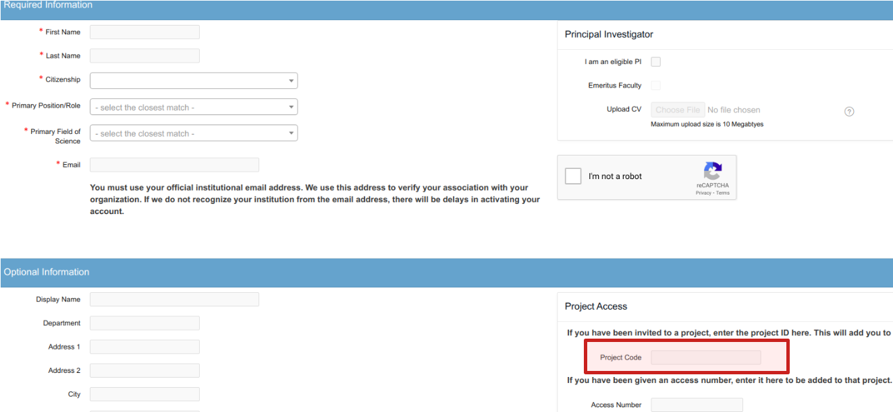

Make sure you have:
An account at the Ohio Supercomputer Center (OSC).
If you don’t, see the instructions below to get one.
Access to an active OSC project.
If you don’t, contact the instructors to be added to a project.
Go to https://my.osc.edu/ and click the blue “Sign Up” bar.
Fill out the form with your personal information (see screenshot below).
In the bottom right portion of the form, enter MCIC’s Project Code, which is PAS0471.
 Enter Project Code PAS0471 in the red box.
Since we’ll be working at OSC during this workshop, you don’t need to have any of the following locally installed for the workshop.
For your general benefit, we do recommend you have access to the following on your local computer.
We recommend VS Code, which is available for all operating systems.
This is a great all-round editor with support for many programming languages, built-in terminals and consoles, Markdown previewing, git support, etc.
Conveniently, VS Code is also available as an Interactive App through OSC OnDemand.
Mac and Linux users have a Unix shell available by default.
To get a Unix shell in Windows, there are a couple of options.
ssh..exe file for the latest version of R from https://cran.r-project.org/bin/windows/base/, by clicking the large Download R [version-number] for Windows link at the top of the gray box..pkg file for the latest version of R from https://cran.r-project.org/bin/macosx/, by clicking the link just below Latest release.apt package manager.RStudio is a so-called Integrated Development Environment (IDE) for R, with side-by-side panes for an R script, an R concole, plots, help documents, and much more. While it is perfectly possible to use R without RStudio, RStudio has become the de facto standard for working with R and is very useful.
To install RStudio, go to the RStudio download page and download and run the installer file for your operating system.
If your R version is below R 3.6, we strongly recommend updating it. You can check which version of R you have by looking at the first lines of output when running the following command inside R:
sessionInfo()To update:
Windows: You can update R from within R. The updateR() function will also take care of updating your packages:
install.packages("installr")
installr::updateR()Mac: Download and install the latest .pkg file as if you were installing it for the first time.
Linux: In Ubuntu, if you installed R with apt or apt-get, you can use apt-get upgrade in a terminal. Otherwise, download and install the latest version after removing the old one. Rtask has some instructions for upgrading to R 4.0 in Ubuntu (along with upgrading to Ubuntu 20.04).